Proposta de mestrado · PPG Sustentabilidade · EACH-USP
Inventário urbano 3D com câmeras 360° de consumo e o LiDAR aéreo público de São Paulo
Isto já funciona numa avenida e numa rua. O mestrado é validar, escalar e transformar em inventário aberto.
Rafael Hilarion de Oliveira Zamberlan · Gestão Ambiental, EACH-USP
Ver em 3D, passo a passoDo problema ao inventário
O problema: a foto não sabe onde está
Uma câmera 360° de consumo custa pouco e fotografa a rua inteira de uma vez. Mas o GPS dela erra. Nas 26 fotos de uma avenida do centro, o erro mediano foi de 22 m e 19° no rumo. Com esse erro, uma árvore vista na foto vai parar no lugar errado do mapa.
A régua para corrigir já existe e é pública: em 2017, a Prefeitura mediu a cidade inteira com laser aéreo (LiDAR), com cerca de 15 pontos por metro quadrado.
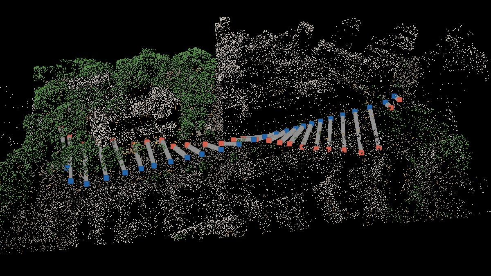
Como o ajuste funciona
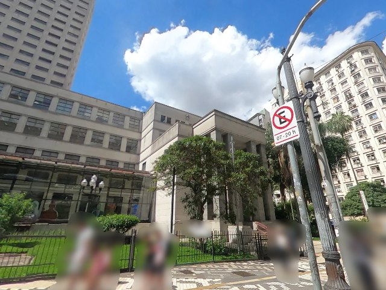
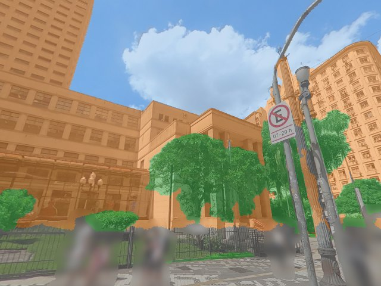
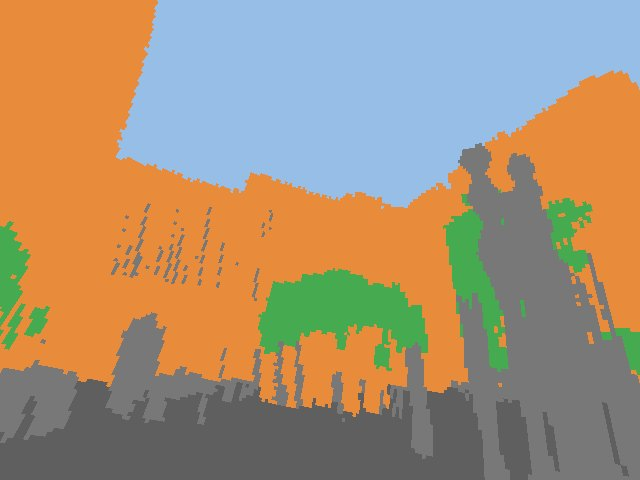
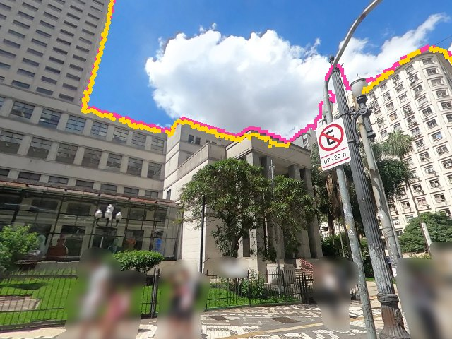
O computador testa milhares de posições na placa de vídeo. Depois, ajusta as 26 fotos juntas, encostando o que elas veem nas paredes, nos telhados e no chão do LiDAR. Nenhum ponto é marcado à mão. Na mediana das 26 fotos, a distância entre os dois contornos cai de 8,1° (GPS) para 0,8°.
O resultado, visto dentro da foto
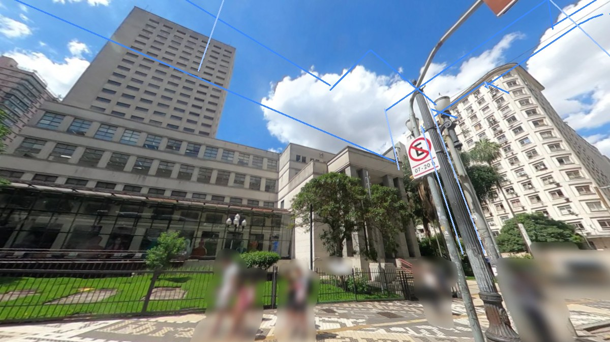
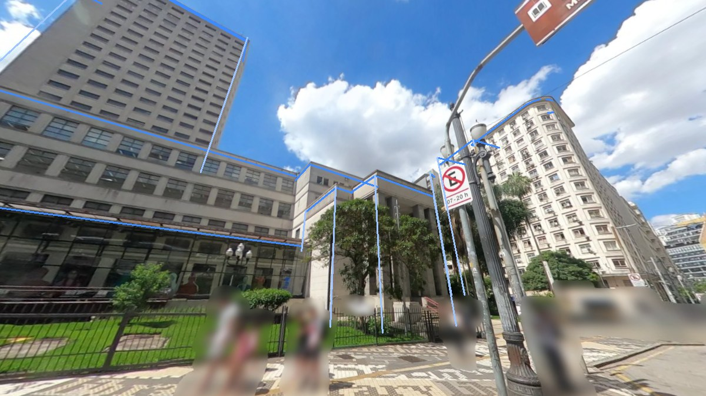
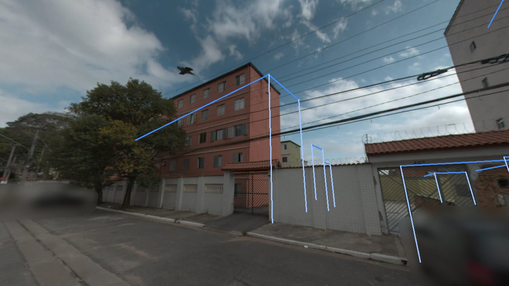
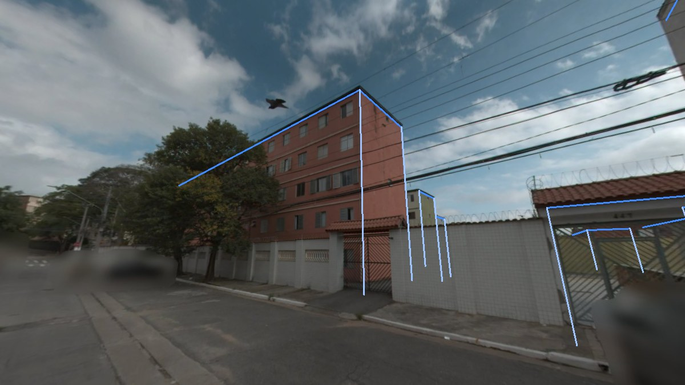
Conferido com réguas que não entraram no ajuste
- ±0,26 m entre as fachadas da nuvem refeita pelas fotos e as paredes do LiDAR.
- 0,14° e 0,04° de erro em 2 quinas de prédio marcadas à mão e deixadas fora do ajuste.
- −0,02 m ao longo da via, segundo as edificações do GeoSampa.
Esses erros são em relação ao LiDAR 2017, que tem os seus: as faixas de voo de ida e volta discordam ~0,2 m entre si.
Detalhes técnicos: o que mais se descobriu e o que foi descartado
- Foto única: 43 de 49 fotos confirmadas por critérios independentes, só pelo contorno prédio × céu.
- Viés lateral de ~0,9 m, causa achada: o modelo do LiDAR "incha" os prédios 0,65–0,80 m além das paredes, e o prédio mais próximo empurra a câmera.
- Um erro no próprio LiDAR 2017: as faixas de voo saem ~0,2 m para a direita do próprio voo (esquema abaixo). O ajuste das faixas tirou cerca de metade do que sobrava entre telhados e paredes.
Testado e descartado
- ICP contra o LiDAR aéreo
- Desliza a nuvem pelas paredes; no COLMAP, baixou as câmeras 1,32 m.
- Erosão bruta do MDS
- Tira o viés lateral, mas devolve ruído e apaga detalhes.
- Similaridade de 7 parâmetros
- Os telhados ruidosos tombam o bloco ~0,17°.
- Correção suave pela nuvem densa
- Mexer nas câmeras sem olhar as fotos quebra a geometria: fachadas a ±0,39–0,42 m.
- Pintura da via × intensidade do laser
- Correlação de 0,1–0,25, com segundo pico quase igual.
- Postes como pontos de controle
- O LiDAR aéreo tem só ~10 postes utilizáveis perto das fotos.
- Linhas do GeoSampa foto a foto
- Na GoPro, a nuvem perde metade dos pontos e as fachadas vão para ±0,46–0,81 m.
- Pontos homólogos próprios
- Empatam com o Metashape (±0,24–0,27 m), sem melhorar a posição ao longo da via.
A foto completa o que o laser não vê
Com as poses certas, as 26 fotos geram uma nuvem 3D colorida: fachadas e janelas, onde o laser aéreo tem só ~3 pontos por m². Ela encosta nas paredes do LiDAR com ±0,26 m.
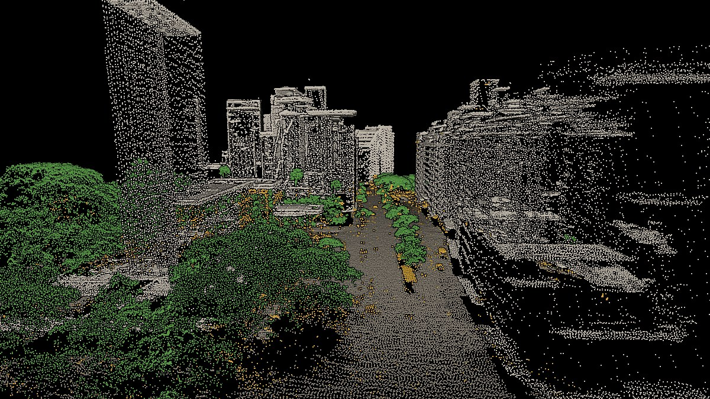
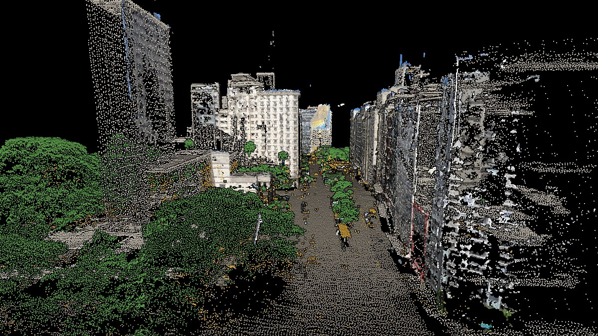
Com a foto no lugar, dá para medir árvores
Numa rua do TCC, a mesma ideia virou um modelo 3D de cada árvore. A foto está no lugar certo, então o que se recorta nela cai no lugar certo do mapa.
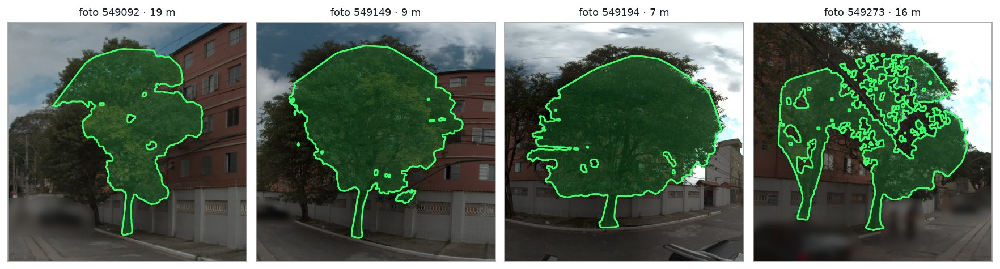
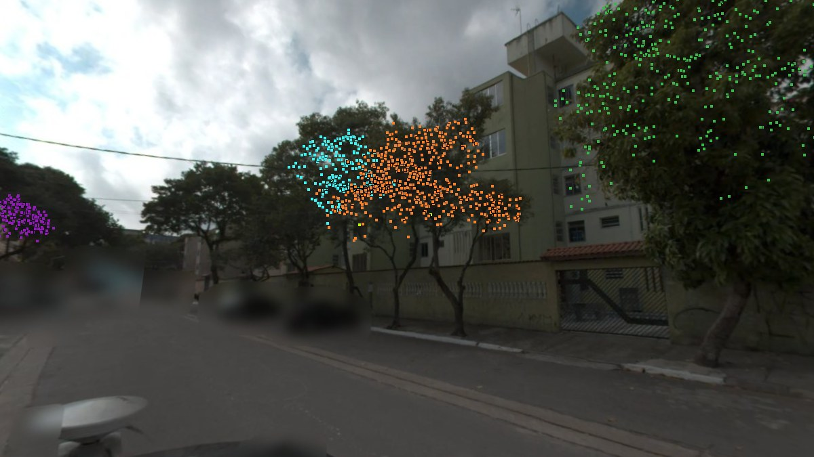
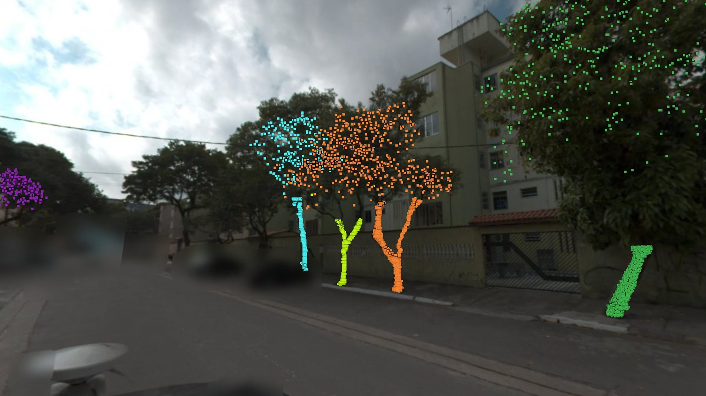
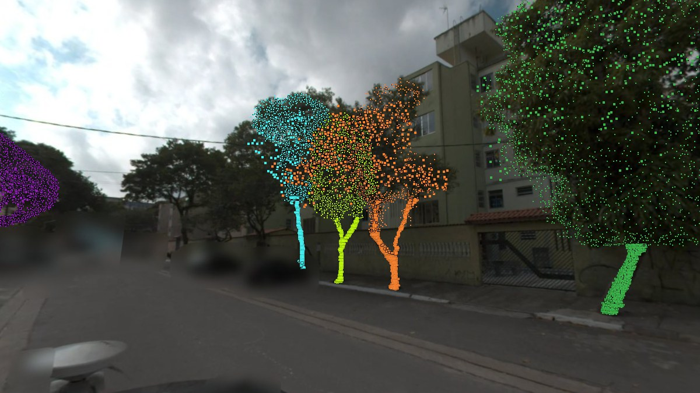
Localização. O TCC posicionava cada árvore pelo centro da caixa do detector, que cai na copa. O método novo usa o pé da árvore em cada foto e a copa do LiDAR que o raio atravessa. O método do TCC só pôde ser refeito em duas árvores:
E as 70 mil fotos abertas?
Não é preciso fotografar a cidade inteira. Só em São Paulo, o Mapillary tem 70.078 fotos 360° abertas e gratuitas, feitas por voluntários (licença CC-BY-SA, que pede atribuição). Se elas encaixarem no LiDAR como as da GoPro, viram matéria-prima para o inventário da cidade.
- Elas encaixam? Num primeiro teste no Ibirapuera, sim, em área aberta: as fotos do estacionamento ficaram a 0,9 m do LiDAR.
- E debaixo das árvores? Ainda não. O GPS do aplicativo era uma reta interpolada, e a reconstrução pelas fotos saiu torta e fora de escala.
- Onde há fotos? Em 930 sequências. A maior parte vem de 2016, a pé e de bicicleta, e de 2022, de carro na Zona Leste.
- Qual a qualidade? Menor que a da GoPro, mas com mais fotos por metro de rua.
Responder a essas dúvidas é uma das perguntas do mestrado.
Veja em 3D, passo a passo
Dois roteiros curtos, dentro das fotos 360° e da nuvem do LiDAR. Escolha um, clique em começar e use próximo para avançar.
Por que isso importa em São Paulo
Árvore, fiação e apagão
- 10–11/12/2025: 2,2 milhões de clientes sem luz no pico e mais de 330 árvores caídas (Conexão Tocantins); no total, a Enel informou 4,4 milhões de clientes afetados (eixos).
- 11/10/2024: 2,1 milhões de clientes da Enel afetados, e 660 mil ainda sem luz após 51 h (Bloomberg Línea).
- 03/11/2023: 3,5 milhões de clientes afetados, até 6 dias sem luz e 1.281 chamados por queda de árvore (SBT News).
- Podas: a Enel fez 11% do plano de 2025 até meados de dezembro, segundo a Prefeitura (eixos). Quedas de árvores: 3.819 em 2022, registradas pela Defesa Civil (SVMA).
Políticas que pedem o dado
- O Plano Municipal de Arborização Urbana tem como Ação 1 "elaborar e disponibilizar o inventário arbóreo" (SVMA).
- Em 2025, a Prefeitura autorizou um inventário de mais de R$ 18,8 milhões, com LiDAR, para ~650 mil árvores em até 3 anos (Prefeitura de SP). Cobre só árvores. O anúncio oficial não fala em dado aberto; uma reportagem posterior diz que os dados irão para o GeoSampa, sem data (Metrópoles).
- O GeoSampa não tem camada pública de bocas de lobo (consulta em out/2026).
- O PlanClima SP 2025 tem como meta publicar, até 2032, planos regionais de rotas arborizadas em todas as subprefeituras (PlanClima SP).
Por que o satélite não basta
- Gênero da árvore: recall médio de 18,7% só com imagem aérea, contra 49% com três imagens de rua por árvore (BEERY et al., 2022).
- Detecção de árvores: mAP de 0,42 com imagem aérea, 0,58 com imagem de rua e 0,71 com as duas mais dados de mapa (WEGNER et al., 2016).
- Tampas de poço e bocas de lobo detectadas em imagem de rua com AP50 médio de 92%; as bocas de lobo sozinhas ficam em 84–89% (SANTOS et al., 2020).
Gêmeo digital e clima urbano
Problemas de dados (aquisição, disponibilidade e qualidade) estão entre os desafios mais citados para gêmeos digitais urbanos (LEI et al., 2023; WEIL et al., 2023). O padrão CityGML 3.0 já prevê espécie, altura e diâmetros de árvore (OGC, 2021).
Ligação com o clima urbano: numa simulação ENVI-met em Augsburg, o cenário-base reproduziu 1,21 °C de uma diferença medida de 1,88 °C entre bairro e parque; com plantas simplificadas, só 0,05 °C (SIMON; OSTER; BECK, 2025). O artigo publicado conclui que as árvores modeladas em detalhe tiveram o melhor desempenho, e que as plantas simplificadas não reproduziram o resfriamento do parque (SIMON; OSTER; BECK, 2026). As árvores 3D do passo 5 são o tipo de dado que essas simulações pedem.
O que já existe e o que falta
| Trabalho | O que faz | O que não cobre |
|---|---|---|
| Zhu, Jia e Ji (2018) | sequência panorâmica × LiDAR móvel, pela linha do céu | corrige só a atitude, foto a foto; LiDAR móvel, não aéreo |
| LoD-Loc v2 (ZHU et al., 2025) | drone × modelo de cidade LoD pela silhueta; 0,72 m de mediana | vista aérea, não de rua; sem inventário |
| Bodensteiner et al. (2015) | vídeos de plataformas comunitárias, na maioria de drone, registrados a LiDAR aéreo público; ~0,4 m em relação à trajetória do ajuste | sem imagem de rua 360°; sem inventário por objeto |
| Balestra et al. (2024) | drone + GoPro MAX para estimar DAP: 4,0 cm de RMSD em 20 árvores | georreferência por 5 pontos de controle RTK, não pelo LiDAR aéreo |
| Rodríguez-Puerta et al. (2022) | LiDAR aéreo e Google Street View para mapear copas | não registra as imagens: usa a posição do Google e junta detecções a até 4 m |
Até onde esta revisão alcançou, não foi identificado trabalho que registre imagens 360° de câmeras de consumo e imagens colaborativas a uma nuvem LiDAR aérea pública, densifique a nuvem com elas e avalie quantitativamente o inventário urbano por objeto resultante.
Perguntas
- Escala. O método se mantém em trajetórias completas (1.500 a 3.500 fotos)? O ajuste conjunto de fotos vizinhas resolve as ruas com poucos prédios à vista? Qual a taxa de sucesso por tipo de cena: avenida, rua estreita, debaixo de copa, céu nublado?
- Comparação. Quanto o método ganha sobre o GPS e sobre métodos de localização cross-view (HC-Net: WANG et al., 2023; CCVPE: XIA; BOOIJ; KOOIJ, 2024)?
- Ganho no inventário. Quanto melhora a geolocalização e a medição dos objetos do TCC (árvores, postes, panelas, bocas de lobo), com DAP e altura conferidos por fita e hipsômetro?
- Imagens colaborativas. Em que condições as imagens do Mapillary servem, a partir do caso do Ibirapuera?
- Produto. Um inventário aberto em WebGIS/Potree, com cadastro colaborativo de espécies.
24 meses
Dado aberto e barato para a gestão de árvores, drenagem e calor em São Paulo.
Rafael Hilarion de Oliveira Zamberlan · bacharel em Gestão Ambiental (EACH-USP, 2026) · rafael.zamberlan@usp.br
No TCC, Geotecnologias Aplicadas à Gestão Urbana: Proposta de Framework Automatizado para Inventário e Monitoramento de Ativos e Passivos Ambientais em Imagens 360°, orientado pela Profa. Flávia Noronha Dutra Ribeiro, detectei árvores, postes e panelas com YOLOv11 e os localizei por triangulação multivista, com saída no QGIS. Os limites foram a pouca sobreposição entre quadros (3–5 m), o erro do GPS e o viés do centro da caixa. Este trabalho ataca os três. Profissionalmente, construo pipelines de agentes de IA.
Referências (ABNT)
- 3DBAG. roofer: large scale automatic LoD2.2 building reconstruction. Versão 1.0.0. [S. l.]: 3DBAG, 2026. Software (licença GPL-3.0). Disponível em: https://github.com/3DBAG/roofer. Acesso em: 28 out. 2026.
- APAGÃO de novembro de 2023: promessas não cumpridas e SP novamente em alerta. SBT News, [S. l.], 15 out. 2024. Disponível em: https://sbtnews.sbt.com.br/noticia/brasil/apagao-de-novembro-de-2023-promessas-nao-cumpridas-e-sp-novamente-em-alerta. Acesso em: 28 out. 2026.
- ARMAGAN, A. et al. Learning to align semantic segmentation and 2.5D maps for geolocalization. In: IEEE CONFERENCE ON COMPUTER VISION AND PATTERN RECOGNITION (CVPR), 2017, Honolulu. Proceedings [...]. [S. l.]: IEEE, 2017. p. 3425-3432. DOI: 10.1109/CVPR.2017.488.
- BALESTRA, M. et al. UAV-spherical data fusion approach to estimate individual tree carbon stock for urban green planning and management. Remote Sensing, Basel, v. 16, n. 12, art. 2110, 2024. DOI: 10.3390/rs16122110.
- BARAZZETTI, L.; PREVITALI, M.; RONCORONI, F. Can we use low-cost 360 degree cameras to create accurate 3D models? The International Archives of the Photogrammetry, Remote Sensing and Spatial Information Sciences, Göttingen, v. XLII-2, p. 69-75, 2018. DOI: 10.5194/isprs-archives-XLII-2-69-2018.
- BEERY, S. et al. The Auto Arborist dataset: a large-scale benchmark for multiview urban forest monitoring under domain shift. In: IEEE/CVF CONFERENCE ON COMPUTER VISION AND PATTERN RECOGNITION (CVPR), 2022, New Orleans. Proceedings [...]. [S. l.]: IEEE, 2022. p. 21294-21307. DOI: 10.1109/CVPR52688.2022.02061.
- BODENSTEINER, C. et al. Single frame based video geo-localisation using structure projection. In: IEEE INTERNATIONAL CONFERENCE ON COMPUTER VISION WORKSHOPS (ICCVW), 2015, Santiago. Proceedings [...]. [S. l.]: IEEE, 2015. p. 1036-1043. DOI: 10.1109/ICCVW.2015.136.
- CUI, T. et al. Line-based registration of panoramic images and LiDAR point clouds for mobile mapping. Sensors, Basel, v. 17, n. 1, art. 70, 2017. DOI: 10.3390/s17010070.
- ENEL: 660 mil clientes residenciais e comerciais seguem sem energia após 51 horas. Bloomberg Línea, [S. l.], 14 out. 2024. Disponível em: https://www.bloomberglinea.com.br/negocios/enel-nao-da-previsao-para-volta-de-energia-em-sp-e-aneel-e-governo-apontam-falhas/. Acesso em: 28 out. 2026.
- ESTADÃO CONTEÚDO. Enel cumpriu só 11% de plano anual de podas de árvores em SP, diz gestão Nunes: 'Pífio'. eixos, [S. l.], 16 dez. 2025. Disponível em: https://eixos.com.br/energia-eletrica/enel-cumpriu-so-11-de-plano-anual-de-podas-de-arvores-em-sp-diz-gestao-nunes-pifio/. Acesso em: 28 out. 2026.
- ESTADÃO CONTEÚDO. Enel diz que apagão em SP afetou 4,4 milhões de clientes, o dobro do divulgado anteriormente. eixos, [S. l.], 14 jan. 2026. Disponível em: https://eixos.com.br/energia-eletrica/enel-diz-que-apagao-em-sp-afetou-44-milhoes-de-clientes-o-dobro-do-divulgado-anteriormente/. Acesso em: 28 out. 2026.
- GLIRA, P.; PFEIFER, N.; MANDLBURGER, G. Hybrid orientation of airborne lidar point clouds and aerial images. ISPRS Annals of the Photogrammetry, Remote Sensing and Spatial Information Sciences, Göttingen, v. IV-2/W5, p. 567-574, 2019. DOI: 10.5194/isprs-annals-IV-2-W5-567-2019.
- LEI, B. et al. Challenges of urban digital twins: a systematic review and a Delphi expert survey. Automation in Construction, Amsterdam, v. 147, art. 104716, 2023. DOI: 10.1016/j.autcon.2022.104716.
- LIGABUE, Rebeca. Inventário de árvores da Prefeitura de SP não cumpre promessa. Metrópoles, [S. l.], 1 mar. 2026. Disponível em: https://www.metropoles.com/sao-paulo/prefeitura-19-milhoes-inventario-arvores. Acesso em: 28 out. 2026.
- MAIS de 30 mil clientes seguem sem energia em SP, cinco dias após ciclone. Conexão Tocantins, [S. l.], 15 dez. 2025. Disponível em: https://conexaoto.com.br/2025/12/15/mais-de-30-mil-clientes-seguem-sem-energia-em-sp-cinco-dias-apos-ciclone. Acesso em: 28 out. 2026.
- OPEN GEOSPATIAL CONSORTIUM. OGC City Geography Markup Language (CityGML) Part 1: Conceptual Model Standard. Versão 3.0.0. [S. l.]: OGC, 2021. (OGC 20-010). Disponível em: https://docs.ogc.org/is/20-010/20-010.html. Acesso em: 28 out. 2026.
- PETERS, R. et al. Automated 3D reconstruction of LoD2 and LoD1 models for all 10 million buildings of the Netherlands. Photogrammetric Engineering & Remote Sensing, [S. l.], v. 88, n. 3, p. 165-170, 2022. DOI: 10.14358/PERS.21-00032R2.
- PREFEITURA DE SÃO PAULO. GeoSampa: mapa digital da cidade de São Paulo. São Paulo, [s. d.]. Disponível em: https://geosampa.prefeitura.sp.gov.br/. Acesso em: 28 out. 2026.
- PREFEITURA DE SÃO PAULO. Prefeitura investe R$ 18,8 milhões em sistema inédito no Brasil que usa laser, 3D e inteligência artificial para catalogar e monitorar árvores. Prefeitura de São Paulo, São Paulo, 12 set. 2025. Disponível em: https://prefeitura.sp.gov.br/w/prefeitura-investe-r-18-8-milh%C3%B5es-em-sistema-in%C3%A9dito-no-brasil-que-usa-laser-3d-e-intelig%C3%AAncia-artificial-para-catalogar-e-monitorar-%C3%A1rvores. Acesso em: 28 out. 2026.
- RAMALINGAM, S. et al. SKYLINE2GPS: localization in urban canyons using omni-skylines. In: IEEE/RSJ INTERNATIONAL CONFERENCE ON INTELLIGENT ROBOTS AND SYSTEMS (IROS), 2010, Taipei. Proceedings [...]. [S. l.]: IEEE, 2010. p. 3816-3823. DOI: 10.1109/IROS.2010.5649105.
- RODRÍGUEZ-PUERTA, F. et al. Mapping tree canopy in urban environments using point clouds from airborne laser scanning and street level imagery. Sensors, Basel, v. 22, n. 9, art. 3269, 2022. DOI: 10.3390/s22093269.
- SANDE, C. van der; SOUDARISSANANE, S.; KHOSHELHAM, K. Assessment of relative accuracy of AHN-2 laser scanning data using planar features. Sensors, Basel, v. 10, n. 9, p. 8198-8214, 2010. DOI: 10.3390/s100908198.
- SANTOS, A. et al. Storm-drain and manhole detection using the RetinaNet method. Sensors, Basel, v. 20, n. 16, art. 4450, 2020. DOI: 10.3390/s20164450.
- SÃO PAULO (Município). Secretaria Executiva de Mudanças Climáticas. Plano de Ação Climática do Município de São Paulo – PlanClima SP: revisão 2025: versão final pré-publicação. São Paulo: SECLIMA, 2026. 209 p. Disponível em: https://prefeitura.sp.gov.br/documents/d/secretaria_executiva_de_mudancas_climaticas/versao-final-plano-de-acao-climatica-do-municipio-de-sao-paulo-revisao-2025-pdf. Acesso em: 28 out. 2026.
- SÃO PAULO (Município). Secretaria Municipal do Verde e do Meio Ambiente. Divisão de Arborização Urbana. Relatório Anual da Gestão da Arborização Urbana 2022. São Paulo: SVMA, [2024?]. 55 p. Disponível em: https://prefeitura.sp.gov.br/documents/d/meio_ambiente/relatorio-gestao-arborizacao_2022-pdf. Acesso em: 28 out. 2026.
- SIMON, J.; OSTER, J.; BECK, C. Exploring the role of urban green spaces in microclimate modeling: insights from ENVI-met simulations in Augsburg, Germany. In: EGU GENERAL ASSEMBLY, 2025. Abstracts [...]. Göttingen: Copernicus GmbH, 2025. EGU25-17996. DOI: 10.5194/egusphere-egu25-17996.
- SIMON, J.; OSTER, J.; BECK, C. Impact of tree representation on urban climate modelling: insights from ENVI-met simulations in Augsburg, Germany. Urban Climate, Amsterdam, v. 67, art. 102879, 2026. DOI: 10.1016/j.uclim.2026.102879.
- TANEJA, A.; BALLAN, L.; POLLEFEYS, M. Registration of spherical panoramic images with cadastral 3D models. In: INTERNATIONAL CONFERENCE ON 3D IMAGING, MODELING, PROCESSING, VISUALIZATION AND TRANSMISSION (3DIMPVT), 2., 2012, Zurich. Proceedings [...]. [S. l.]: IEEE, 2012. p. 479-486. DOI: 10.1109/3DIMPVT.2012.45.
- VOSSELMAN, G. Analysis of planimetric accuracy of airborne laser scanning surveys. In: ISPRS CONGRESS, 21., 2008, Beijing. The International Archives of the Photogrammetry, Remote Sensing and Spatial Information Sciences, v. 37, pt. B3a. [S. l.]: ISPRS, 2008. p. 99-104. Disponível em: https://www.isprs.org/proceedings/XXXVII/congress/3_pdf/15.pdf. Acesso em: 28 out. 2026.
- WANG, X. et al. Fine-grained cross-view geo-localization using a correlation-aware homography estimator. In: CONFERENCE ON NEURAL INFORMATION PROCESSING SYSTEMS (NEURIPS), 37., 2023, New Orleans. Advances in neural information processing systems 36 [...]. [S. l.]: Neural Information Processing Systems Foundation, 2023. p. 5301-5319. DOI: 10.52202/075280-0234.
- WEGNER, J. D. et al. Cataloging public objects using aerial and street-level images: urban trees. In: IEEE CONFERENCE ON COMPUTER VISION AND PATTERN RECOGNITION (CVPR), 2016, Las Vegas. Proceedings [...]. [S. l.]: IEEE, 2016. p. 6014-6023. DOI: 10.1109/CVPR.2016.647.
- WEIL, C. et al. Urban digital twin challenges: a systematic review and perspectives for sustainable smart cities. Sustainable Cities and Society, Amsterdam, v. 99, art. 104862, 2023. DOI: 10.1016/j.scs.2023.104862.
- XIA, Z.; BOOIJ, O.; KOOIJ, J. F. P. Convolutional cross-view pose estimation. IEEE Transactions on Pattern Analysis and Machine Intelligence, [S. l.], v. 46, n. 5, p. 3813-3831, 2024. DOI: 10.1109/TPAMI.2023.3346924.
- ZHU, J. et al. LoD-Loc v2: aerial visual localization over low level-of-detail city models using explicit silhouette alignment. In: IEEE/CVF INTERNATIONAL CONFERENCE ON COMPUTER VISION (ICCV), 2025, Honolulu. Proceedings [...]. [S. l.]: IEEE, 2025. p. 26610-26621. DOI: 10.1109/ICCV51701.2025.02470.
- ZHU, N.; JIA, Y.; JI, S. Registration of panoramic/fish-eye image sequence and LiDAR points using skyline features. Sensors, Basel, v. 18, n. 5, art. 1651, 2018. DOI: 10.3390/s18051651.